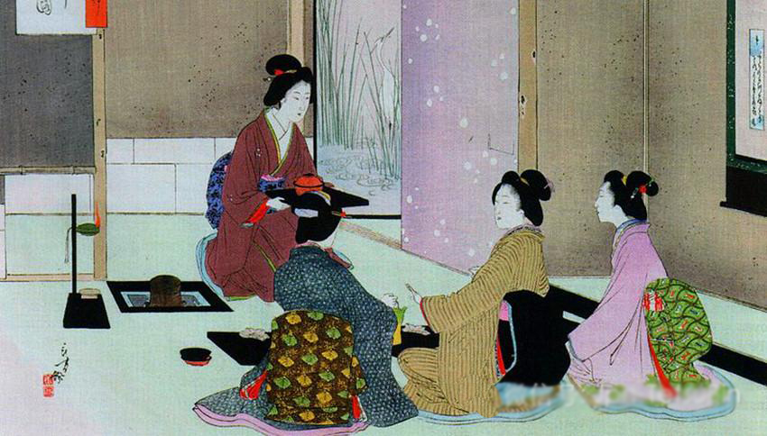

日本茶道

当您面对精湛的日本茶道啧啧称奇的时候，可曾想到茶道的老祖宗并不在东瀛之邦，而是在中国？可是为什么中国人的饮茶之道和日本茶道相差如此之大呢？
回溯中国茶道的源流，答案就在千年的时光中……
唐代是中国历史上最开放的时代，长安城中汇集了来自世界各地的商人使者。也就是在这个时代，中国茶道开始它的远行。
唐顺宗永贞元年，日本最澄禅师从我国研究佛学回国，在他回国的行李中，就有中国的茶籽，最澄禅师将茶籽种在近江（滋贺县）。815年，日本嵯峨天皇莅临滋贺县梵释寺，僧人们献上清茶一杯。天皇饮后龙心大悦，开始大力推广饮茶，于是茶叶在日本得到大面积栽培。
宋代，日本荣西禅师来我国学习佛经，归国时不仅带回茶籽播种，并根据中国寺院的饮茶方法，制订了自己的饮茶仪式。荣西禅师晚年著《吃茶养生记》一书，被称为日本第一部茶书。书中将茶誉为“圣药”、“万灵长寿剂”，这对推动日本社会饮茶风尚的发展起了重大作用。
中国茶道成于唐，继于宋，盛于明。历经煎茶道、点茶道、泡茶道，今天中国的茶道正是泡茶道的延续。
如今的日本，却依然完整地保留着中国千年前宋代点茶道的仪式，如此精妙神奇的茶道在中土大地已经无处寻觅，无怪乎会有人认为日本是茶道的故乡了。
点茶为道，泡茶亦为道，真正的道存留在清茶的淡香中、留存在饮茶之人的心中……